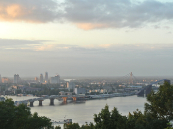
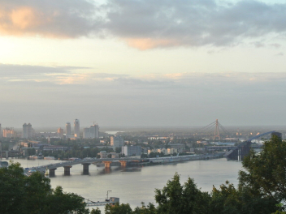
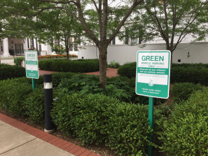
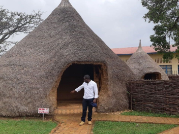
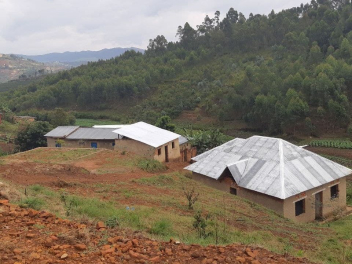
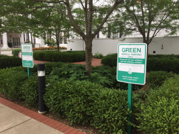
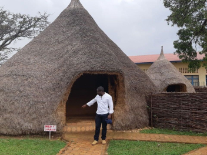
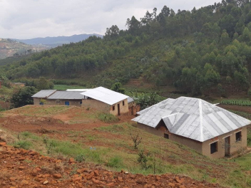

Kiev, Ucrania
ARTISTA
Natalia Dolgushina, productora de contenidos

Kiev (o Kyiv), la capital de Ucrania, es una gran ciudad situada
a orillas del río Dniéper. Por supuesto, nadie en su sano juicio
se bañaría en el río, a menos que se haya criado aquí, en cuyo
caso probablemente lo haya intentado en algún momento. Los
veranos son calurosos aquí, y los inviernos con fuertes
corrientes de aire, pero el otoño y la primavera son
absolutamente increíbles.
La ciudad en sí es una mezcla de arquitectura
prerrevolucionaria, de posguerra y soviética, toda ella
salpicada de balcones modificados. Si te encuentras en la orilla
derecha del Dniéper, el paisaje es difícil de atravesar para las
personas en bicicleta y las que llevan tacones. Sin embargo, la
orilla izquierda es considerada mucho menos interesante y
prestigiosa, incluso por la gente que vive en las afueras de la
derecha.
Comprar esta obra de arte como NFT
Criccieth, Gales
ARTISTA
Steffan Warren, editor principal
Kseniya Glagoleva, directora del proyecto

La ruina medieval del castillo de Criccieth domina la ciudad desde una roca que se adentra en el mar. Se cree que fue construido por Llewelyn el Grande en el siglo XIII. Unos 900 años después, la autodenominada *Perla de Gales a orillas de Snowdonia* se ha convertido en un popular destino turístico durante los meses de verano.
A poca distancia del castillo, se puede disfrutar del mejor helado del mundo en Cadwalader's, cuyo ingrediente secreto se rumorea que son las algas de la zona. Otro reclamo a la fama es el hecho de que Criccieth ganó el premio *Wales in Bloom* durante cinco años consecutivos por sus espectaculares exhibiciones florales alrededor de la ciudad. También fue el hogar de David Lloyd George, el único galés que ocupó el cargo de Primer Ministro del Reino Unido.
Comprar esta obra de arte como NFT
 

 




